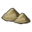

Run a3bd6176
Maps
One frame per save.
Population
Who lives where, and how many have work.
World population by pop type
Every location's pops, summed per save. Peasants with a job (farms, RGOs, buildings) are Peasants; peasants without one live off subsistence farming (Subsistence peasants).
Population by world region
Population of each world region (EU5 sub-continent; ocean and river-navigation pseudo-regions left out). Growth per year is the average yearly rate between two saves.
Unemployment
Subsistence peasants (peasants without a job) as a share of all people, world and per world region.
Institutions
How far the institutions have spread: a location has an institution once its spread reaches 100 %.
Institutions
Per person: the institutions present in each location (spread at 100 %), averaged over the people, world and world regions. Share of people: the part of the world's population that lives where an institution is present, per institution in the order they appeared.
Trade
What moved between markets and what did not: the routes and the trade balance of every market as videos, then trade per goods group, per good and per market.
World trade
Goods imported by markets from other markets, valued at base prices (gold per month), by goods group; the imported share is imports ÷ (production + imports) of all markets together.

What was traded and what was not
Per good and save. Imported share: imports ÷ (production + imports) of all markets. Unmet demand: demand no market could supply (Σ max(0, demand − supply) ÷ Σ demand). Markets short: supply below 90 % of demand; in surplus: producing and supply above 110 % of demand. A good with markets short and markets in surplus at the same time is one trade does not carry.
Trade between world regions
Goods moved by the trade routes that ran, summed per world region (the region of each market's centre), gold per month at base prices. Exports and imports count only trade with other regions; inside is trade between markets of the same region. Net = exports − imports.
World regions: trade in and out
Every world region of the save: what it sent to and received from other regions, trade inside it, its main goods and partners (gold per month at base prices).
Flows between world regions
Every pair of world regions that traded, exporter to importer, with the goods that made up the flow.
Markets
Every market of the save: what it produced, imported and exported (gold per month at base prices; main goods with their value), how much of its supply came from other markets and how much demand nothing covered. Click a column to sort; pick another save above the table.
Goods
Every good of the save (units per month): world production and use, price, how much markets imported, demand nothing covered, how many markets were short or in surplus, and the markets that exported, imported or lacked it most.
Largest trade routes
The 150 largest routes of the save by value at base price (amount moved per month).
Prices
Every good's price against its base price, and whether the world uses more than it makes.
Prices of every good
World price of each good (markets weighted by traded volume) as a multiple of its base price; red = dearer, blue = cheaper. Goods grouped (the coloured bar: farming, mining, gathering/hunting/forestry, manufactured), the most produced first; hover a cell or an icon for the name. Mod bookkeeping goods (offset, logistics, province food, labour) are left out.
Prices, use and production by goods group
Price index: price ÷ base of every good, weighted by its world use at base price. Use ÷ production: what pops, buildings, construction and armies take (without trade between markets) against what is produced; above 1 the world uses more than it makes (stocks run down, prices climb). Production at base prices.
Buildings
Building levels and what they cost to build.
Building levels by category
All building levels, grouped by the game's building category (largest nine, the rest as other).
Building investment
What the standing buildings cost to build at the location's prices (list price divided by max(0.5, 1 + the location's building efficiency)); level n costs price × (1 + increase per level × (n − 1)), today's mod prices, no country-wide cost modifiers. Added: change against the first save (negative: levels lost to destruction, downgrades or obsolete buildings).
Building investment per capita
Building investment at the location's prices (list price divided by max(0.5, 1 + the location's building efficiency)) per 1,000 people, world and world regions.
Town rights & industry
Which town rights and industry promotions the AI grants, where, and whether they sit where their goods are made.
Town rights held
Every town right held at each save, by category (specialization: raises some goods' output and lowers the rest; raw materials: RGO size and output; markets & trade; military; privileges & other) and by world region. Towns with a right: the share of towns and cities (rank town or larger) that hold at least one.
Town rights by type
Towns holding each right at each save (colour on a log scale), grouped by category in the order of the chart above, the most held first. Change: rights gained (blue) or lost (red) since the previous save.
Town rights granted, upgraded, swapped and removed
Changes between two consecutive saves, shown at the later save. Upgraded: a right replaced by the one it upgrades to (a charter by its royal right). Swapped: a town lost one right and gained another. Removed below zero, split by whether the town changed owner between the saves. A right that went and came back between two saves is not seen.
Do specialization rights fit their towns?
Every specialization right held, against what its town makes (buildings and RGO, nominal output at base price). Best fit: no charter or right of the specialization lines open to every town covers more of the town's production than the held one. Weaker fit: another would cover more. Goods not made there: the town makes none of the right's goods. Share of town output: the part of all the holding towns' production in the held right's goods, against the best generic right's.
Industry promotions
Every industry a country promotes in one of its areas (the goods' output there rises, the country's pops want more of them), by industry and by world region (the region of most of the area's locations).
Are industries promoted where they are made?
Each promotion's area ranked among the promoting country's areas by the output of the industry's goods (buildings and RGOs, nominal output at base price): the only area where the country makes the goods (no choice), its top area of several, its 2nd or 3rd, a lower one, or an area where it makes none of them.
Town rights
Every town right held in the save: how many towns hold it, the change since the previous save, the value of its goods those towns make, how often it is the best fit, and where it is held.
Industry promotions
Every industry promotion of the save with the output of the industry's goods in the promoted area and how that area ranks among the country's areas.
Countries
The largest countries by population and by income.
Largest countries by population
The ten most populous countries at the last save and every country that was among the three largest at any save (population of the locations they own; subjects count on their own).
Largest countries by income
Monthly income of the ten richest countries at the last save and every country that was among the three richest at any save. Per million people: income ÷ population (the in-game GDP per capita idea).
Largest countries
The 60 most populous countries of the save. Income and expense are the last month's.
Game speed
How long the game took per game year, from the times the saves were written.
Seconds per game year
Wall-clock seconds the game took per game year between two consecutive saves (the saves' file times), 23.9 s on average. Includes saving. 1 stretch more than 1.6× slower than its neighbours (paused, about 10 min) left out.